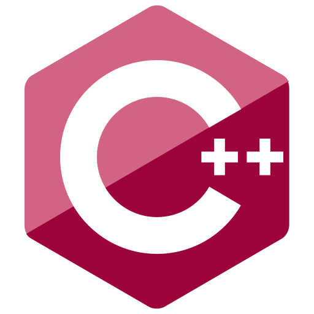

1. Configurations
1.1 Compiler
| What? | How? |
|---|---|
| Conformance Mode | Project -> Configuration: All Configurations -> C/C++ -> Language -> Comformance Mode -> Choose: YesDisables compiler extensions ensuringp program is compliant with C++ standards & will work on any system. |
Ref: https://www.learncpp.com/cpp-tutorial/configuring-your-compiler-compiler-extensions/
1.2 Warnings
| What? | How? |
|---|---|
| Platform | x86 (32-bit) or x64 (64-bit) |
| Increase warning level | Project -> C/C++ -> General -> Warning Level -> Choose Level 4 |
| Enable signed/unsigned conversion warnings | Project -> C/C++ -> Command Line -> Additional -> Enter /w44365Compiler enables these warnings at warning level 4 (as above) Project -> C/C++ -> External Includes -> External Header Level-> Choose Level 3 |
| Warnings as errors | Project -> Configuration: All Configurations -> General ->Choose Treat Warnings as Errors |
Reference: https://www.learncpp.com/cpp-tutorial/configuring-your-compiler-warning-and-error-levels/
1.3 Language Standard
Visual Studio 2022 defaults to C++14 capabilities, i.e. excludes new features introduced in C++17/C++20.
| What? | How? |
|---|---|
| Change Language Standard | Project -> Configuration: All Configurations -> Language -> C++ Language Standard -> Choose: ISO C++ Latest Standard |
| Export Configurations | Project -> Export Template: Project Template -> Enter & Description: e.g. “C++23 Latest Console Application” -> Finish |
| Import Configurations | List of Project templates: Choose Template |
| Compile Support C++23 Link | https://en.cppreference.com/w/cpp/compiler_support/23 |
1.4 Language Options
| Publication Year | Formal Name | Conventional name | Development name | Notes |
|---|---|---|---|---|
| 2011 | ISO/IEC 14882:2011 | C++11 | C++0x | |
| 2014 | ISO/IEC 14882:2014 | C++14 | C++1y | |
| 2017 | ISO/IEC 14882:2017 | C++17 | C++1z | |
| 2020 | ISO/IEC 14882:2020 | C++20 | C++2a | |
| 2024 | ISO/IEC 14882:2024 | C++23 | C++2b | Finalised 2023 |
| TBD | TBD | C++26 | C++2c |
Ref: https://www.learncpp.com/cpp-tutorial/configuring-your-compiler-choosing-a-language-standard/
2. [Removed]
3. Initialisation
3.1 Narrowing Conversions
| Initialisation | Statement | Results |
|---|---|---|
| List-init | int w1{ 4.5 }; |
compile error: list-init doesnt allow narrowing conversion |
| Copy-init | int w2=4.5; |
4 |
| Direct-init | int w3=4.5; |
4 |
| Zero-init | int w4={}; |
0 |
4. Literals
A literal’s value is placed directly in the executable, and the executable itself can’t be changed after it is created.
A variable’s value is placed in memory, and the value of memory can be changed while the executable is running.
Ref: https://www.learncpp.com/cpp-tutorial/introduction-to-literals-and-operators/
4.1 Format
Ctrl+k, Ctrl+f: Format Selection
Ref: https://www.learncpp.com/cpp-tutorial/whitespace-and-basic-formatting/
5. Preprocessor
5.1 Phases of Translate
The entire process of preprocessing, compiling, and linking is called translation.
The text of a C++ program is kept in units called source files.
C++ source files undergo translation to become a translation unit, consisting of the following steps:
- Maps each source file to a character sequence.
- Converts each character sequence to a preprocessing token sequence, separated by whitespace.
- Converts each preprocessing token to a token, forming a token sequence.
- Converts each token sequence to a translation unit.
Ref: https://en.cppreference.com/w/cpp/language/translation_phases.html
5.2 Preprocessor Directives
Preprocessor directives (often just called directives) are instructions that start with a # symbol and end with a newline (NOT a semicolon).
The final output of the preprocessor contains no directives – only the output of the processed directive is passed to the compiler.
5.3 #include
When you #include a file:
- the preprocessor replaces the #include directive
- with the contents of the included file.
The included contents are then preprocessed (which may result in additional #includes being preprocessed recursively), then the rest of the file is preprocessed.
5.4 Preprocessor Directive Example
#include <iostream>
int main()
{
std::cout << "Hello, world!\n";
return 0;
}the preprocessor will:
- replace
#include <iostream> - with the contents of the file named
iostreamand - then preprocess the included content and the rest of the file.
5.5 Translation Unit
Each translation unit typically consists of:
- a single code (.cpp) file and
- all header files it #includes (applied recursively
- since header files can #include other header files).
5.5 Macro defines
The #define directive can be used to create a macro.
In C++, a macro is a rule that defines:
- how input text is converted into
- replacement output text.
There are two basic types of macros:
- object-like macros, and
- function-like macros (unsafe).
5.5.1 Object-like macros
Macro Identifiers: Macro names should be written in all uppercase letters, with words separated by underscores
#define IDENTIFIER
#define IDENTIFIER substitution_text5.6 Conditional Compilation
The conditional compilation preprocessor directives allow you to specify under what conditions something will or won’t compile:
or Preprocessor commands:
#ifdef SOME_NAME2: run ifSOME_NAME1is defined#ifndef SOME_NAME2: opposite toifdef#endif: end above#if 0: exclude a block of code
In most cases, macro substitution does not occur when a macro identifier is used within another preprocessor command.
There is at least one exception to this rule: most forms of #if and #elif do macro substitution within the preprocessor command.
5.6.1 Macro Substitution within Preprocessor Command
#define FOO 9 // Here's a macro substitution
#ifdef FOO // This FOO does not get replaced with 9 because it’s part of another preprocessor directive
std::cout << FOO << '\n'; // This FOO gets replaced with 9 because it's part of the normal code
#endif5.7 #defines
Directives are resolved before compilation, from top to bottom on a file-by-file basis.
6. Header Files
Prefer a .h suffix when naming your header files (unless your project already follows some other convention):
- A header guard, which we’ll discuss in more detail in the next lesson (2.12 – Header guards).
- The actual content of the header file, which should be the forward declarations for all of the identifiers.
Header files are often paired with code files, with:
- the header file providing forward declarations for
- the corresponding code file.
Since our header file will contain a forward declaration for functions defined in
add.cpp, we’ll call our- new header file
add.h.
| What? | How? |
|---|---|
| Add Header Directories | Properties -> VC++ Directories -> General: Include Directories |
6.1 Best Practice
Order #includes, alphabetically per group, as follows:
- The paired header file for this code file (e.g.
add.cppshould#include "add.h") - Other headers from the same project (e.g.
#include "mymath.h“) - 3rd party library headers (e.g.
#include <boost/tuple/tuple.hpp>) - Standard library headers (e.g.
#include <iostream>)
7. Header Guards
All of your header files should have header guards on them. SOME_UNIQUE_NAME_HERE can be:
- any name you want, but by convention is,
- full filename of the header file,
- typed in all caps,
- using underscores for spaces or punctuation
7.1 Example 1
#ifndef SQUARE_H // square.h
#define SQUARE_H
int getSquareSides()
{
return 4;
}
#endif7.2 Example 2
#ifndef _IOSTREAM_
#define _IOSTREAM_
// content here
#endif7.3 Naming Suggestions
PROJECT_PATH_FILE_H,FILE_LARGE-RANDOM-NUMBER_H, orFILE_CREATION-DATE_H.